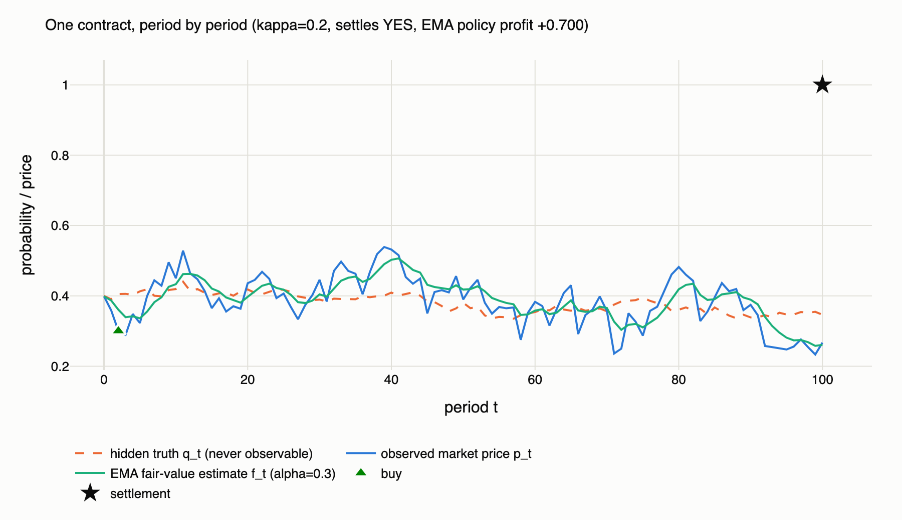
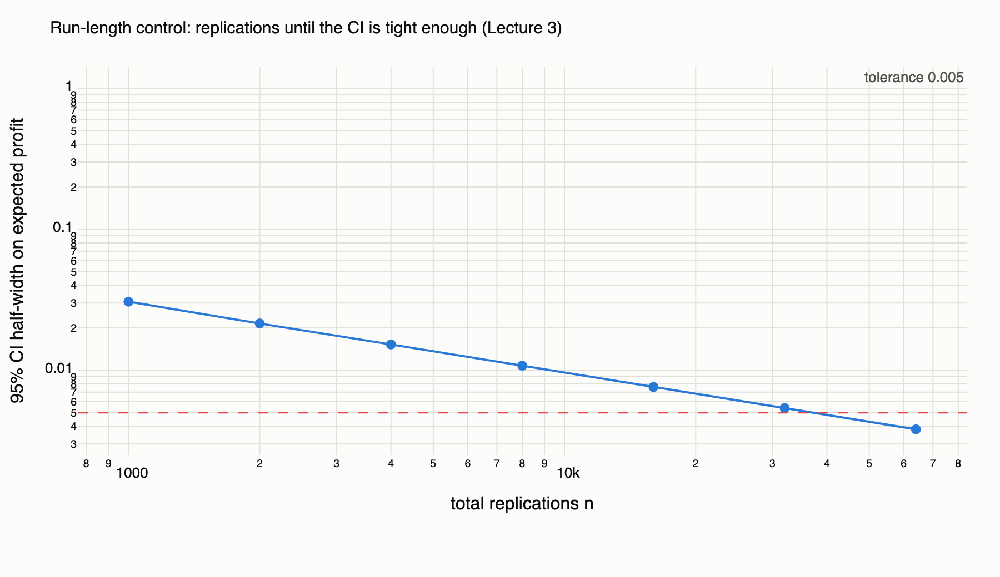
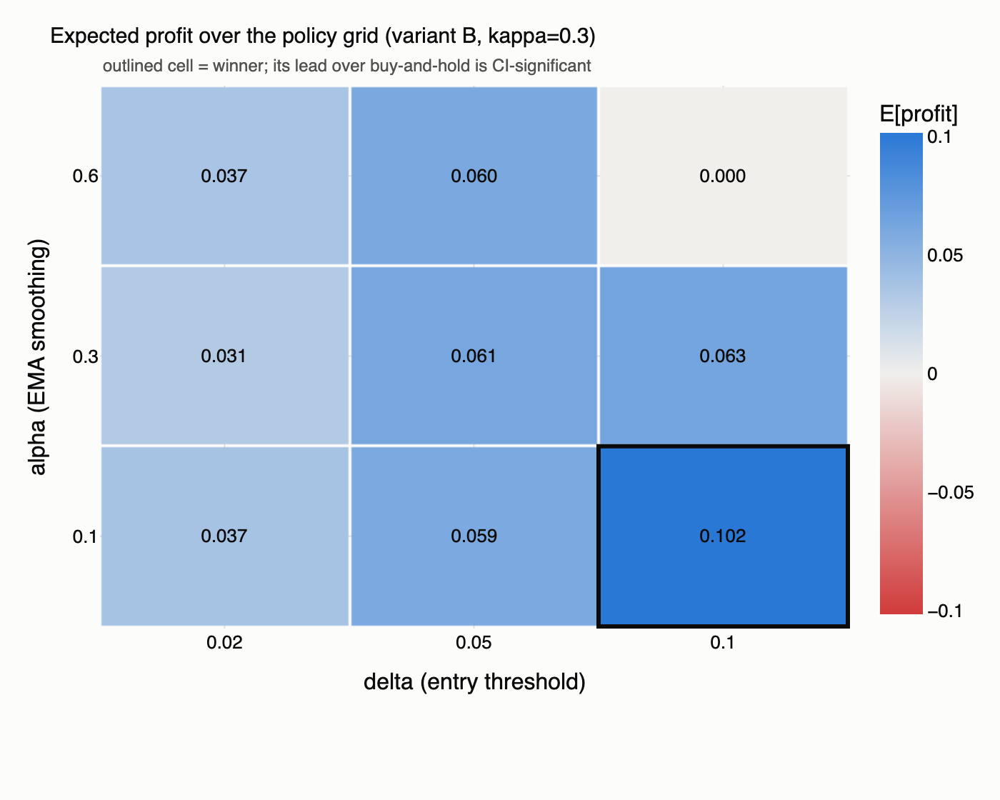
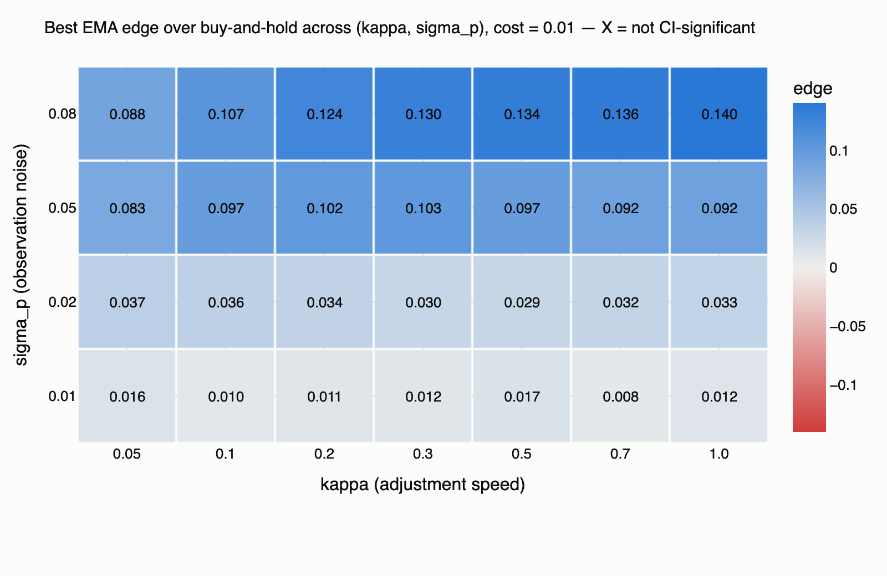
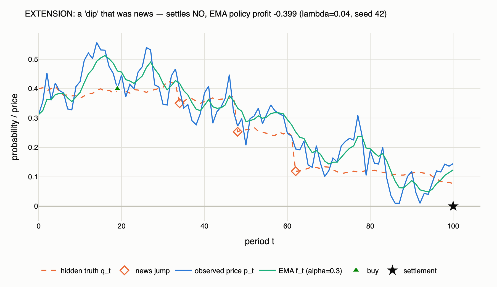
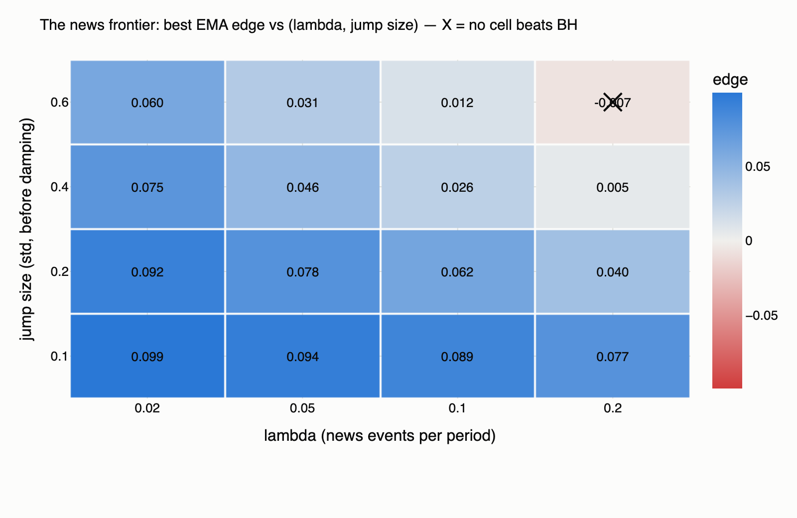

Trading Against Noise
A simulation study of trading policies in prediction markets
Anastasia Larionova · Qian Shen · Chenhao Xi · Haoyu Zheng · github.com/larionovaa2248-glitch/stochastic-project
Speaker notes
Welcome. 20 minutes: the model, why you can trust it, what it found, live demo. Navigate with arrow keys; press N to toggle these notes.
A contract on “Will X happen?” trades at 40¢
and pays $1 if X happens.
Can a simple rule beat just buying it?
- The price is the market's probability forecast — but it carries noise: thin order books, sentiment, slow reactions.
- If dips below "fair value" are usually noise, buying dips should profit.
- If the market is basically right, nothing beats buy-and-hold.
- Which world are we in — and what does the answer depend on?
Speaker notes
Frame as a bet between two worldviews: exploitable noise vs. efficient markets. Our contribution is measuring precisely when each wins — inside a controlled simulation.
In a simulation, we control the truth
- Real data never reveals the true probability — a backtest can't separate skill from luck.
- We build a world where the truth exists but is hidden from the trader.
- We tune exactly how wrong prices may be — then measure policy profit against known truth.
- Tens of thousands of independent replications → real confidence intervals.
- Every number is seeded. One master seed (20260812) regenerates every table and figure.
- Real Polymarket data is used only to set realistic inputs — never fitted, never backtested.
Speaker notes
This is the methodological pitch: simulation buys ground truth and replication. Mention the scope guard explicitly — professor cares.
Three layers, simulated in order each period
Profit per unit = payout − entry price − cost. A policy can profit only by buying below true value.

Speaker notes
Walk the figure: price rattles around slow truth; EMA smooths; policy bought the dip; star = settlement. Emphasize the trader's information set is only the blue line.
A martingale that stays a probability
- Zero-mean shocks ⇒ E[qt+1 | qt] = qt. Today's truth is the best forecast of tomorrow's — and it gives us testable implications.
- √(q(1−q)) damping: Bernoulli-variance structure — probabilities near 0 or 1 move less, so the walk stays in (0,1) naturally, not via the clip.
- Markov: tomorrow depends only on today. Simplest defensible information structure.
Speaker notes
The martingale property is doing double duty: it's economically sensible AND it's the basis of two validation tests (mean q_T = q0; settlement frequency = q0).
One dial for market efficiency: κ
- Variant A: an error is born and dies within one period — the market re-prices from scratch every step.
- Variant B: the gap to truth closes at rate κ, so a shock decays geometrically — a cheap contract stays cheap for ~1/κ periods.
- κ = 1 collapses B into A exactly, path-for-path (enforced by a test) — so κ is a continuous dial from "instant repricing" to "very sticky".
- σp sets how much error; κ sets how long it lives.
Speaker notes
These two dials — noise size and noise lifetime — are the axes of the whole study. Keep them separate in the audience's head now; the punchline depends on it.
Smooth the price, buy the dip, hold to settlement
- α = memory of the fair-value estimate (small α = long memory)
- δ = how big a dip counts as mispricing, not wiggle
- Full grid: α ∈ {0.1, 0.3, 0.6} × δ ∈ {0.02, 0.05, 0.10} — nine policies
- Benchmarks: buy-and-hold (the "market is right" position) and never-trade (profit ≡ 0)
- No lookahead, structurally: decide(price_history) receives a copy of p₀…pt — nothing else exists in its world
Speaker notes
Stress that policies are deliberately mechanical — no learning, no optimization on the fly. The question is whether even a naive rule finds the noise.
37 tests gate every change
- Zero-noise limit: σp=0 ⇒ price ≡ truth, degenerate EMA never trades, all policies ≈ buy-and-hold (optional stopping on a martingale)
- Martingale: mean qT = 0.3996 vs q₀ = 0.40 (SE 0.0005) · settlement frequency 0.4030 (SE 0.0035)
- Calibration: contracts started at x settle YES ≈ x of the time, for x ∈ {0.10 … 0.90}
- No lookahead: shock all prices after t=40 → every pre-shock trade is bit-identical, even for a "future-hungry" probe policy built to exploit any leak
- Seed reproducibility: golden-value test pins the exact random stream
Adversarial review caught a real bug: our first lookahead test never actually showed the policy the shocked prices — it could not fail. Rebuilt through the real harness. Full log in the repo.
Speaker notes
The bug story is a feature, not an embarrassment: it shows the review process worked and the surviving test has actual detection power. PROJECT.md calls lookahead "the one bug that would invalidate the whole analysis."
Every claim carries a 95% CI
- Per policy: E[profit], P(loss), E[loss | loss], CLT interval mean ± 1.96·s/√n
- Common random numbers: all 11 policies score the same simulated paths; "beats buy-and-hold" always means the paired-difference CI clears zero
- Run-length control: double n until the CI half-width meets tolerance — ±0.005 needed n = 64,000
- Sweeps: σp × κ × cost around a data-calibrated baseline

Speaker notes
CRN is the technical flex: paired differences cut comparison variance ~10x, which is why our "beats BH" CIs are so tight (±0.0015 vs ±0.007 marginal).
Eight of nine cells beat buy-and-hold

| Policy | E[profit] | P(loss) |
|---|---|---|
| EMA(0.1, 0.10) ★ | +0.1015 | 58.8% |
| EMA(0.3, 0.10) | +0.0629 | 31.5% |
| EMA(0.3, 0.05) | +0.0614 | 60.2% |
| Buy-and-hold | −0.0019 | 60.2% |
| Never-trade | 0 | 0% |
Winner = patience in both dials: long memory (α=0.1) + only act on ~2σ dips (δ=0.10). Paired edge +0.1034, CI [+0.1020, +0.1049].
Speaker notes
Note buy-and-hold ≈ 0 by construction (martingale + mean-zero noise at entry). Also note the corner cell (0.6, 0.10) almost never trades — the two dials interact.
How much persistence does the edge need? None.

- Significant at every κ ∈ [0.05, 1], every cost ≤ 2¢
- Peak at κ ≈ 0.2–0.3: +0.1023 [+0.1007, +0.1038]
- Worst case (κ=1, 2¢ fees): still +0.0939 [+0.0913, +0.0965]
- Interior optimum: dips must persist long enough to catch but correct before settlement
Speaker notes
We expected a threshold ("κ below which it works"). The model said: wrong intuition. Explain both flanks of the peak. Costs barely matter because both strategies trade ≤ once.
Noise creates the edge. Persistence only shapes it.

| σ_p | Best edge vs BH | Significant? |
|---|---|---|
| 0.00 | +0.0027 | no |
| 0.02 | +0.0331 | yes |
| 0.05 | +0.0913 | yes |
| 0.08 | +0.1385 | yes |
| 0.12 | +0.2061 | yes |
Read by rows: the edge scales with noise everywhere. At σ_p = 0 it vanishes — exactly. Dip-buying is a bet that dips are noise; in this model, by construction, they are.
Speaker notes
This is the thesis slide. It also tells us where the result must break: when dips can be NEWS. Segue to the extension.
Add news: Poisson arrivals in the hidden truth
- Discrete-time Poisson process: geometric interarrivals (memoryless), event count ≈ Poisson(λT)
- Zero-mean jumps keep the martingale ⇒ all 37 validation tests pass with jumps ON
- Gaussian mixture increments: variance (σq² + λσJ²)·q(1−q) + fat tails — lurches, not just more wiggle
- λ = 0 draws nothing extra — approved model bit-for-bit (golden test)

Speaker notes
This is the falsification test of slide 12, not decoration. Walk the formula: same diffusion plus a Bernoulli-gated jump term. Stress the three math facts fast, then tell the seed-42 story on the figure.
News erodes the edge — and we mapped where it dies

- Erosion is ~linear in λ: −24% at one event per 20 periods, −62% at one per 5 (σJ=0.2)
- The frontier is real: at (λ=0.2, σJ=0.6) the best cell significantly loses — −0.007 [−0.009, −0.004]
- On the way there, winners retreat: δ 0.10 → 0.02 — big dips become information, not bargains
- Variant A + jumps: winner flips slow → fast smoothing — long memory becomes a stale anchor
Speaker notes
Read the heatmap corner to corner: bottom-left ≈ the approved model, top-right = news-dominated. The δ retreat is the subtlest point — say it slowly. This completes the thesis: the edge equals the noise share of the error budget, and we can now say where the sign flips.
The rule doesn't lose less often — it loses less

- Winner's P(loss): 58.8% — it loses more often than not, yet is strongly profitable
- Buying cheap cuts both ways: smaller losses (−$0.29 vs −$0.40 given loss) and bigger wins
- Third spike at exactly $0: paths where the signal never fired
Speaker notes
Good place for the "expected value isn't the whole story" caveat — a real trader cares about the distribution, and settlement risk dominates path risk here.
Real Polymarket data sets the inputs — nothing more
- Live fetch from Polymarket's public APIs (Gamma + CLOB); paste any market URL into the dashboard
- Method of moments: Δp is MA(1) under variant A ⇒ lag-1 autocovariance identifies σp, residual variance (with √(q(1−q)) deflation) identifies σq
- Five diverse markets committed as offline samples (418–743 hourly points each) — the demo works with no internet
- Implied σq: 0.002 – 0.019 per step ⇒ our default 0.02 is the realistic-but-volatile end
- Estimator validated on simulated data with known parameters
- Scope guard: no fitting, no backtesting on real data — no claim here is a claim about realized Polymarket profits
Speaker notes
Anticipate the obvious question ("so can I make money on Polymarket?") with the scope guard. The model assumes all mispricing is noise; reality mixes noise with news.
Let's break the market together
Single Path Explorer → Policy Lab verdict flips as δ moves → load a real market → news jumps on
Open the dashboard →Requires the local server: streamlit run dashboard/app.py
· fully offline-capable (bundled sample markets)
Speaker notes
Demo script (~5 min): 1) Resimulate a few paths — point out the hidden truth. 2) Policy Lab: drag δ from 0.05 to 0.15, watch significance verdict flip. 3) Paste a Polymarket URL, prefill, rerun. 4) Toggle news jumps, resimulate until a jump path shows the dip-buying trap. Fallback: bundled samples if venue Wi-Fi dies.
Count the noise, not the stickiness
- A naive EMA dip-buying rule beats buy-and-hold by +$0.10 per $1 contract at the baseline — CI-significant across the entire persistence range, surviving 2¢ costs
- The expected "persistence threshold" doesn't exist; instead the edge peaks at moderate κ and is created by observation noise — vanishing exactly at σp = 0
- News erodes the edge linearly and kills it at a mapped frontier — (λ=0.2, σJ=0.6) flips the sign: dips become information
- Trust chain: 37 tests · adversarial review · common random numbers · one master seed
- Future: place real markets on the frontier map (estimate λ, σJ from outsized moves) · exit rules & position sizing · bid-ask spreads and price impact · correlated multi-market portfolios
The takeaway we'd offer: the best output of a simulation study is the mechanism it forces you to articulate. We asked "how much persistence does a trader need?" — the model answered "wrong question."
github.com/larionovaa2248-glitch/stochastic-project · Thank you — questions!
Speaker notes
End on the reframed question. Offer the repo link for anyone who wants to reproduce — everything regenerates from seed 20260812.